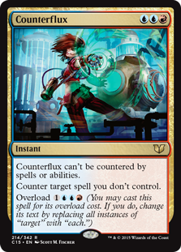

brewing with surrak - targeted removal

published - 08/04/2019
Every deck need a way to deal with threats. Be it a creature that threatens the win. Or a stax piece that will lock us out of the game. Maybe it's just a boardwipe that'll set us back to square one. Whatever it is, we need to deal with it so we don't lose.
Let's talk about what we can do to set our opponents back by getting rid of their threats through the joy of targeted removal, and what could work for our deck.
read more
brewing with surrak - general redundancy

published - 28/03/2019
With EDH being a 100 card singleton format, it's important to make sure that as the game progresses you're continuing to advance towards your goal, typically closing out and winning the game - that means each card you select for the deck needs to fill a role that helps to get you closer to that goal.
With that in mind, I want to dive into making sure that we have ways to keep casting our creatures freely, and to continue pushing damage through, even when we don't have our commander on board.
read more
starting a brew with surrak dragonclaw

published - 28/03/2019
Surrak Dragonclaw. The Temur wedge commander from Khans of Tarkir. A large 6/6 beater that looks at control decks and says "screw you guys, me and my clan are coming for you, and we're ready to kick some ass!!" - by which I mean he makes your other creature spells uncounterable AND gives them all trample.
He's an awesome commander, and I think that he could be pretty awesome to build, so join me on this journey as I, someone who is rubbish at brewing and building decks, tries to build a deck with this badass, bear-punching legend.
read more